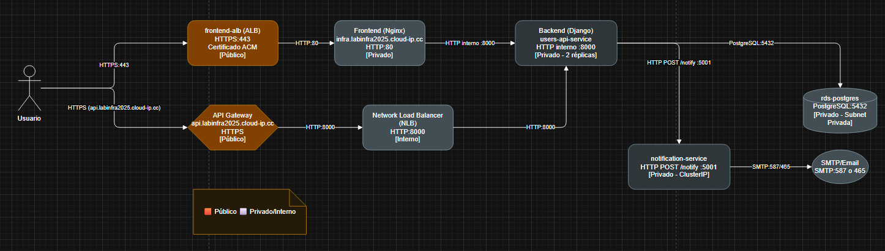

Diagramas del Sistema de Registro
Arquitectura y red del sistema desplegado en AWS EKS.
Diagrama de Arquitectura

Diagrama de Red

Diagramas del Sistema de Registro
Arquitectura y red del sistema desplegado en AWS EKS.
